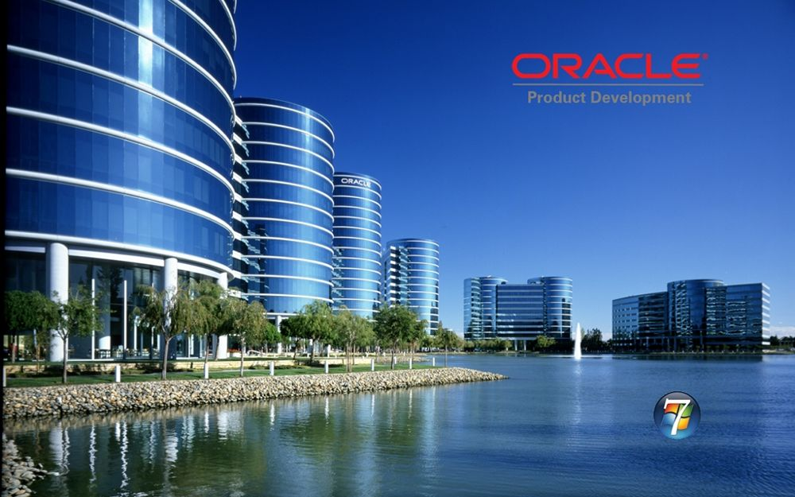

ORACLE

Oracle Corporation, formerly Software Development Laboratories (1977–79), Relational Software Inc. (1979–82), and Oracle Systems Corporation (1982–95), global corporation that develops and markets computer software applications for business.
- Type: Public
- industry: Enterprise software,Cloud computing
- Founded: June 16, 1977; 44 years ago
Santa Clara, California, U.S
- Founder: Larry Ellison
- Headquarters: Austin, Texas, United States
- Area served: Worldwide
- Chairman & Ceo:
Larry Ellison
- Revenue Increase: US$40.47 billion (2021)
- Operating income: Increase US$15.21 billion (2021)
- Net income: Increase US$13.74 billion (2021)
- Total assets: Increase US$131.10 billion (2021)
- Total equity: US$5.95 billion (2021)
- No. of employees: 132,000 (2021)
What oracle is known for?
Oracle is a computer technology corporation best known for its software products and services like Java. Through the company's four main business segments—cloud and license, hardware, and services—Oracle sells its cloud-engineering services and systems and database management systems.
What is the main purpose of Oracle?
Oracle Database Architecture. An Oracle database is a collection of data treated as a unit. The purpose of a database is to store and retrieve related information. A database server is the key to solving the problems of information management.
Oracle Services
- Oracle Application Express
- Oracle Cloud
- Oracle Corporation
- Oracle Financial Services Software Limited (OFSS)
- Oracle Database
- Oracle Service Bus
- Oracle WebLogic Server
- Oracle Cloud Human Capital Management
- Oracle Linux
- Oracle Net Services